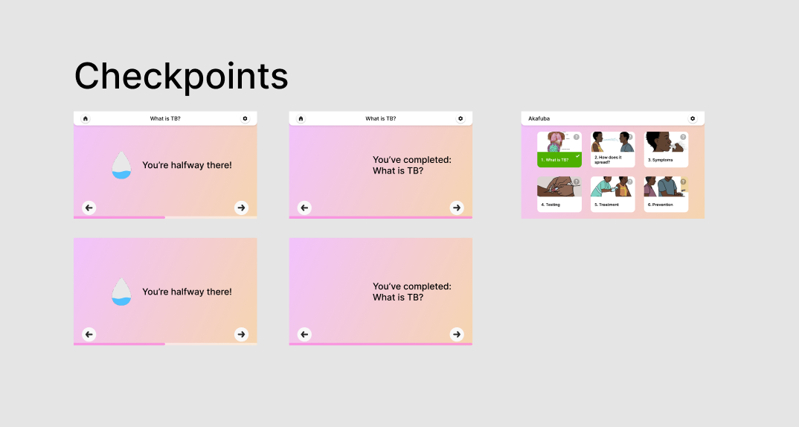
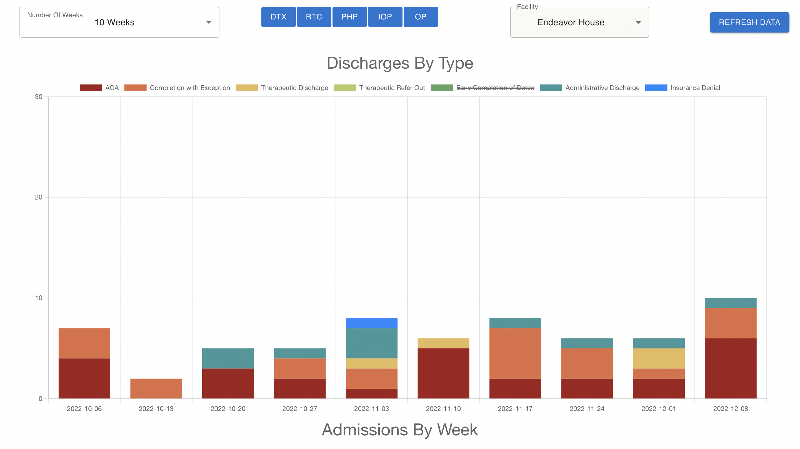

Showcase
Auctios - Live Auction Platform
Reflecting on my experience as the lead designer for Auctios, the journey, though challenging, offered a rich landscape for learning and growth. During this period, I extensively utilized Figma, a powerful design tool, to completely overhaul both mobile and desktop platforms.This transformation was pivotal, contributing to the success of live events, with sales soaring over $1000 per event.
The design process was intensive and required a deep understanding of user experience and interface design. I was responsible for creating and iterating designs, constantly seeking to align them with the company's vision and user needs. This task demanded not only technical skills but also a keen eye for aesthetics and functionality.
However, my tenure at Auctios was unexpectedly cut short by the company founder as he temporarily halted work on the startup. This abrupt conclusion, although initially disheartening, served as a valuable lesson for myself. As I took time to reflect on what I desired in professional dynamics and the importance of clear communication and agreements. One of the key takeaways from this experience was the necessity of ensuring proper compensation for work.
Despite the challenges faced, including the lack of proper compensation, the role served as a significant learning experience, providing insights into the complexities of design work in a fast-paced, evolving startup environment. The lessons learned at Auctios were multifaceted, from honing my design skills and understanding the intricacies of user-centric design in a tech startup to navigating professional relationships and advocating for fair compensation. These experiences have been instrumental in shaping my approach to design and professional interactions, emphasizing the importance of clear communication, contract agreements, and standing firm on the value of one's work.
Akafuba - Tuberculosis App
The Akafuba mobile application project marked a significant milestone in my journey as a designer. It was my first major endeavor using Figma and played a crucial role in gaining design experience and comfortability. The project's goal was to develop a user-friendly mobile application to educate Ugandan villagers about Tuberculosis. This objective required not only a deep understanding of user experience but also cultural sensitivity and awareness.
As I immersed myself in this project, I found it to be a fertile ground for growth and learning. The design process involved creating an intuitive user interface that was accessible and easily navigable for the target audience. It was essential to ensure that the design was not only aesthetically pleasing but most importantly, accessible and effective in conveying crucial health information. A unique part of this project was the main customer segment being, small classes taught in Ugandan villages. This information was set to be taught by one instructor, with limited resources for screen size and internet access. This led to key alterations in our design iterations to focus on easy to click, and universally recognizable design choices.
Additionally, one of the most significant achievements in this project was the development of a comprehensive design system. This system was a cornerstone in establishing consistency and coherence across the application. It involved developing a set of design principles, guidelines, and components that could be reused and adapted as needed. Creating this system was a complex task that required an increaserd understanding of design theory and much much practice and failure. Regardless, I took this undertaking mostly blind as I found the benefits it served, as a step towards standardizing the design process, where essential to task's objectives of ensuring uniformity while allowing for flexibility and creativity, within different environments.
The Akafuba project was a transformative experience. It was here that I first honed my skills in creating a cohesive design language and system, which later has become an invaluable asset in my subsequent projects, both for EWH (Engineering World Health) and outside of the organization. The experience of working on the Akafuba app taught me the importance of understanding the audience, the power of a well-structured design system, and the need for accessible designs. These learnings have been instrumental in shaping my approach to design and continue to influence my work today.
Curriculum Website
The curriculum builder project for Engineering World Health (EWH) was a natural progression from my work on the Akafuba mobile application. This project aimed to create a platform that would enable the development of educational apps similar to Akafuba, facilitating the creation of tailored teaching tools for different contexts. My role in this project marked a shift from purely design-focused responsibilities to a more management-oriented position.
In this new role, my focus extended beyond designing wireframes and interfaces. This role expansion required me to not only manage the project but also to oversee significant iterations within the design process. Ensuring that the curriculum builder website was user-friendly and effective in guiding users through the app creation process was paramount. This involved repeatedly iterating on the design to refine its usability and functionality. Each iteration was a step towards achieving a design that was intuitive and equipped with the necessary tools and resources to aid users in developing their educational apps.
One of my key responsibilities was to ensure that the website could effectively guide users in creating educational applications. This meant the platform needed to be intuitive, user-friendly, and equipped with the necessary tools and resources to assist users in designing apps like Akafuba. To achieve this, I drew upon my design experience to contribute to the website's layout and functionality, ensuring a seamless user experience. Taking on a management role also involved coordinating with various team members, including designers, developers, and subject matter experts. This required effective communication and collaboration skills, as I had to bridge different perspectives and expertise areas to achieve a cohesive and functional end product.
The curriculum builder website project was a valuable learning experience that broadened my skill set. It allowed me to explore aspects of project management and team leadership while still leveraging my design background. This project was a testament to my ability to adapt and grow within a role, taking on new challenges and expanding my professional capabilities.
PHD Visit Day App
 This group project focused on designing an application for PhD
candidates attending the Information Science department's visit
day at Cornell University. This project was an intricate and
collaborative effort, to design an application that concisely and
clearly met the needs of the user. Our primary objective was to
create a user-friendly and informative application that would
facilitate the candidates' experience during their visit. The
design process was marked by a series of methodical steps,
starting with the creation of affinity diagrams, followed by
iterative design phases, and culminating in the final design of
the application. Initially, our team utilized affinity diagrams to
organize and make sense of the vast amount of information and
requirements. This technique was crucial in identifying key
themes, user needs, and priorities for the application. It allowed
us to categorize data effectively and provided a clear roadmap for
our design process. By visually arranging ideas and information,
we could see patterns and relationships that informed our design
decisions.
This group project focused on designing an application for PhD
candidates attending the Information Science department's visit
day at Cornell University. This project was an intricate and
collaborative effort, to design an application that concisely and
clearly met the needs of the user. Our primary objective was to
create a user-friendly and informative application that would
facilitate the candidates' experience during their visit. The
design process was marked by a series of methodical steps,
starting with the creation of affinity diagrams, followed by
iterative design phases, and culminating in the final design of
the application. Initially, our team utilized affinity diagrams to
organize and make sense of the vast amount of information and
requirements. This technique was crucial in identifying key
themes, user needs, and priorities for the application. It allowed
us to categorize data effectively and provided a clear roadmap for
our design process. By visually arranging ideas and information,
we could see patterns and relationships that informed our design
decisions.
The application was structured into four main pages, each dedicated to a specific aspect of the visit day experience. The separation of content across these pages was a strategic decision to enhance user navigation and ensure that information was easily accessible and not overwhelming. Each page underwent several iterations, where we continually refined the design based on user feedback and our evolving understanding of the candidates' needs.
- Welcome Page: Was designed to provide a warm and informative welcome to the candidates, giving them an overview of what to expect during their visit.
- Schedule Page: Detailed the visit day schedule, offering an easy-to-navigate layout that allowed candidates to view and plan their day effectively.
- Information Page: Contained essential details about Cornell and its PhD programs, helping candidates to familiarize themselves with the university and its offerings.
- Contact Page: Provided information on how to reach various departments and support services.
Throughout the design process, we placed a strong emphasis on user experience, ensuring that each page was intuitive, visually appealing, and aligned with the needs of PhD candidates. The iterative design approach allowed us to continually refine and enhance the application, incorporating feedback and making adjustments to improve usability and relevance. The final designs of the application reflected our commitment to creating a user-centered, informative, and engaging tool for PhD candidates. This project was not only a testament to our design and collaboration skills but also highlighted our ability to empathize with user needs and translate them into a functional and aesthetically pleasing digital solution. The experience gained from this project was invaluable, enhancing my skills in user research, iterative design, and team collaboration, all of which are critical in the field of application design.
Zinnia Dashboard
During my Fall tenure at Zinnia Health, I embarked on a project that significantly enhanced my technical and problem-solving skills. My primary responsibility was to design a comprehensive dashboard for administrative use, which provided aggregated data visualizations of all the facilities. This role as a full-stack developer required me to harness various technologies, including Chart.js, TypeScript, and React. The development of the dashboard was a complex task, as it involved creating visual representations of large datasets to make them easily understandable and actionable for administrative purposes. The use of Chart.js was pivotal in this aspect, enabling me to design interactive and informative charts and graphs. TypeScript and React played crucial roles in building a robust and efficient frontend, ensuring a seamless user experience.
One of the key learning aspects of this project was the utilization of my mentor's help. Initially, I faced significant challenges in finding resources and getting stumped with complex issues. These hurdles were not just technical but also involved learning how to effectively seek help and use available resources. My mentor's guidance was instrumental in navigating these challenges. I learned to ask the right questions, delve deeper into problems, and explore various solutions.
 This experience was transformative in my growth as a developer. It taught me the importance of perseverance and resourcefulness. Navigating through the initial difficulties and leveraging my mentor's expertise helped me develop a more refined approach to problem-solving. I became more adept at identifying issues, researching solutions, and applying them effectively. In conclusion, the Zinnia Health project was a pivotal point in my professional development. It allowed me to not only enhance my technical skills in full-stack development and data visualization but also to grow personally by improving my ability to seek help, learn from others, and overcome obstacles. The skills and experiences gained from this project have been invaluable in my journey as a developer and continue to influence my approach to technology and problem-solving.